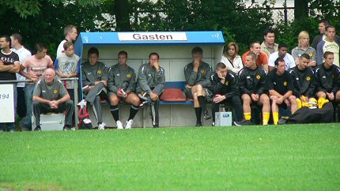

|
RKTSV - Roda JC (0-3) 30 juni 2005 |
RKTSV -
Roda JC (0-3) 30 juni 2005
Jessica showt het huisdier-vrije shirt.
Na een frisse regenbui kwamen 850 bezoekers naar het eerste
oefenduel
van Roda JC kijken.

Huub Stevens bekijkt de wedstrijd enigszins gelaten.
DJD communiceert en dirigeert nadrukkelijk. Hij scoort 0-1 in de
15e min.
Een van de spaarzame hoogtepunten van de wedstrijd.
De Kerkraadse derde-klasser bleek een stugge tegenstander.
Bodor aan een van zijn hoekschoppen in de eerste helft.
De Colinetfans. Volgens insiders gaat Jeromeke het niet redden
bij Roda.
Kone en Sonko zijn er nog niet bij. Voorts wordt er volop
geëxperimenteerd
met de selectie. In de tweede helft speelde een compleet ander elftal.
Warmlopers voor de tweede helft.
De reusachtige Vasiljevic.
De nieuwe, tweede keeper, Castro.
Het werd nog 0-2, (50') door een eigen doelpunt van TSV en 0-3,
(90') door
een benutte vrije trap van Lachambre.
Rodagirl Kelly heeft een eigen kledinglijn.....